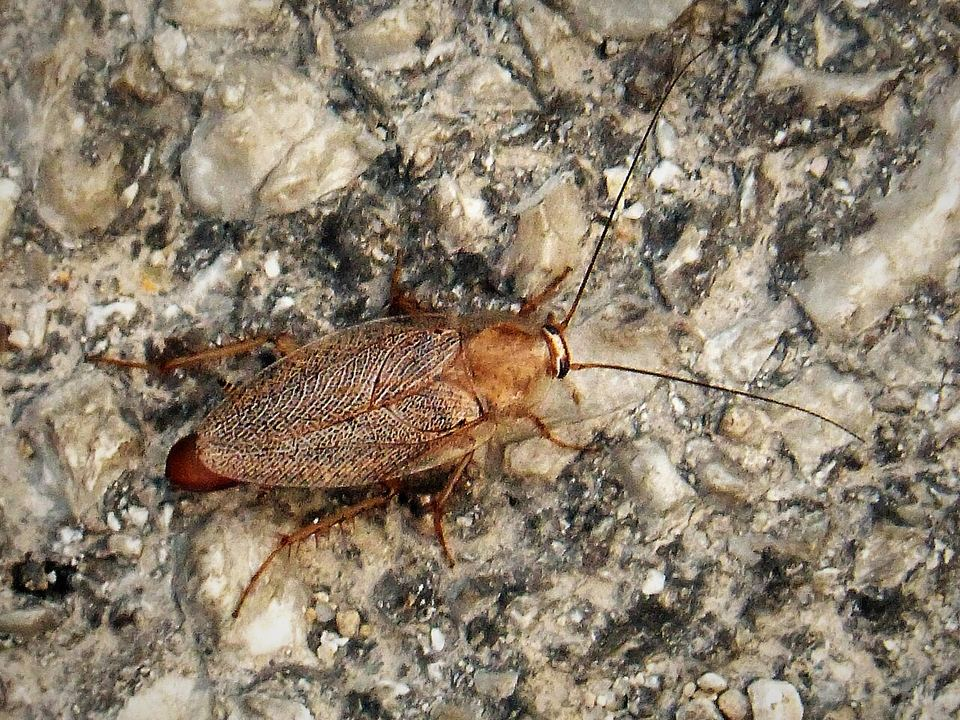

Restaurants et métiers de bouche : un plan de lutte prêt pour le contrôle
Blattes derrière la plonge, souris dans la réserve, mouches en salle : en cuisine professionnelle, un nuisible peut coûter une fermeture. Il faut un suivi régulier et des preuves écrites.
Mis à jour le · par Mathias Sergent, technicien certifié
- Technicien certifié Certibiocide
- Particuliers et professionnels
- Tout le département 13

Ce que demande la réglementation
La réglementation européenne sur l'hygiène des denrées alimentaires impose aux établissements de disposer de procédures de lutte contre les nuisibles, intégrées à leur plan de maîtrise sanitaire.
Lors d'un contrôle des services vétérinaires, on vous demande de montrer ce plan : où sont les postes, quels produits sont utilisés, quand ont eu lieu les passages et ce qui a été constaté.
Un dossier clair pour vos contrôles
- Un plan de lutte avec l'emplacement des postes numérotés.
- Un rapport après chaque passage : constats, actions, recommandations.
- Les fiches techniques et de sécurité des produits utilisés.
- Un suivi à la fréquence adaptée à votre activité, défini au devis.
Les nuisibles qu'on traite en cuisine
- Blattes
Gel dans les moteurs, les joints et les gaines, en dehors des heures de service. Voir cafards et blattes.
- Rats et souris
Postes sécurisés à l'extérieur et dans les réserves, obturation des accès. Voir souris et dératisation.
- Mouches et insectes volants
Conseils sur les accès et pose de dispositifs adaptés aux zones alimentaires.
- Fourmis
Appâts placés hors des zones de préparation. Voir fourmis.
Interventions discrètes, en dehors du service
Nous intervenons avant l'ouverture ou après le service, en véhicule non marqué et sans tenue qui attire l'attention de vos clients si vous le souhaitez.
Boulangeries, restaurants, snacks, traiteurs, épiceries et supérettes : le suivi est adapté à la taille de l'établissement et à son exposition.
Suivi des établissements alimentaires dans les Bouches-du-Rhône
Nous intervenons à Marseille (16 arrondissements), dans le Pays d'Aix et autour d'Aubagne, depuis notre base de Trets. Nous passons aussi régulièrement à Gardanne et à Gémenos.
Le rendez-vous est fixé à l'appel, du lundi au samedi de 8 h à 19 h. Décrivez ce que vous voyez, ou envoyez une photo : cela nous aide à venir avec le bon matériel.
Quels nuisibles menacent un commerce alimentaire ?
| Signe | Ce que ça indique | Que faire |
|---|---|---|
| Blattes germaniques en cuisine | Chaleur et humidité des équipements | Gel ciblé et suivi |
| Rongeurs en réserve | Accès par les livraisons ou les réseaux | Postes sécurisés et obturation |
| Mouches en salle ou en cuisine | Déchets et ouvertures | Prévention et traitement adapté |
| Mites alimentaires dans les farines | Stock contaminé | Tri des stocks et traitement |
Par exemple, une blatte vue en salle pendant le service peut coûter bien plus cher qu'un plan de lutte. En pratique, on inspecte les moteurs de vitrines, les plonges et les joints, là où les blattes se cachent. Concrètement, un rapport d'intervention daté aide lors des contrôles d'hygiène. Exemple fréquent : des rongeurs qui entrent par la porte de livraison laissée ouverte.
Restaurants et métiers de bouche : vos questions
Un contrat est-il obligatoire ?
La réglementation impose des procédures de lutte contre les nuisibles, pas un prestataire en particulier. Un contrat de suivi permet de les tenir à jour et de produire les rapports demandés lors des contrôles.
Pouvez-vous intervenir en urgence avant un contrôle ?
Oui, appelez-nous : nous intervenons en général sous 24 h et remettons un rapport après le passage.
Les produits utilisés sont-ils compatibles avec une cuisine ?
Les produits et leur emplacement sont choisis pour les zones alimentaires, hors contact avec les denrées. Les fiches de sécurité vous sont remises.
Un plan de lutte contre les nuisibles est-il obligatoire ?
La réglementation en hygiène alimentaire impose de maîtriser les nuisibles dans les locaux. Un suivi documenté par un professionnel en est la preuve la plus simple.
Peut-on traiter sans fermer le restaurant ?
Le plus souvent, oui : les traitements sont planifiés hors des heures de service, avec des produits adaptés aux zones alimentaires.
Fournissez-vous un rapport pour le dossier HACCP ?
Oui. Après chaque passage, un rapport daté vous est remis pour votre dossier d'hygiène (plan HACCP, plan de maîtrise sanitaire). Le devis est gratuit.